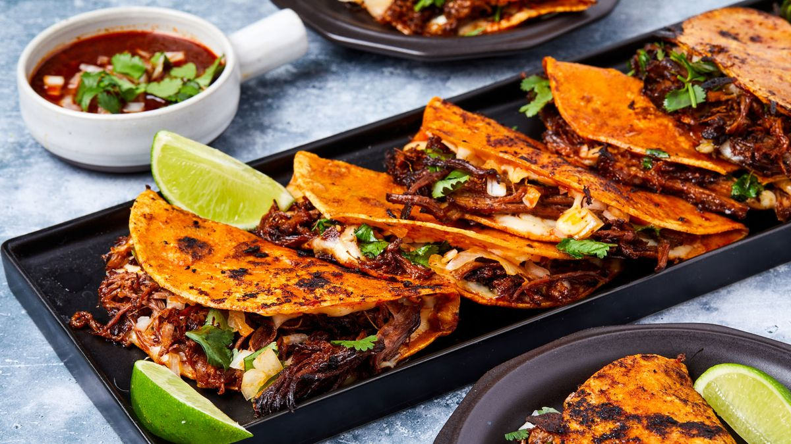

Birria Tacos

What is Birria?
First let’s start with Birria. Hailing from Jalisco, Mexico, birria is a rich stew that’s typically made with either goat or lamb. It’s traditionally served in a consomé broth along with a mixture of cilantro and white onion. There are no tacos involved! Birria is truly the best – it’s so delicious on a cold day.
Note: This recipe was originally from A Cozy Kitchen.
Ingredients
Birria de Rez
- 2 pounds boneless chuck
- 1 pound oxtail or bone-in short ribs
- 1 teaspoon neutral oil, (avocado or vegetable oil)
Sauce
- 7 ancho chiles, (ends trimmed and de-seeded)
- 7 guajillo chiles, (ends trimmed and de-seeded)
- 3 chiles de arbol, (ends trimmed and de-seeded)
- 1 white onion, (peeled and halved)
- 6 garlic cloves, (peeled)
- 4 roma tomatoes
- 1 tablespoon black peppercorns
- 1 teaspoon dried Mexican oregano
- 1 teaspoon cumin seeds
- 1 teaspoon coriander seeds
- 1/4 teaspoon ground cloves
- 1/2 Mexican cinnamon stick
- 3 bay leaves
- 1 teaspoon apple cider vinegar
- 3 cups beef broth or water, (divided)
Tacos
- 1/4 cup minced cilantro
- 1/4 white onion, (minced)
- Juice from 1 lime
- Kosher salt
- Corn tortillas
- 3 ounces Oaxacan cheese, (or mozzarella)
Cooking Instructions
To sear the meat:
- Bring the meat to room temperature, about 30 minutes and then sprinkle liberally on all sides with kosher salt. In a large Dutch oven (or a pot with an oven-proof lid), set over medium-high heat, add the neutral oil. When hot, add the meat and sear on all sides until browned. Do this step in batches. Once done, transfer to a bowl.
To make the sauce:
- Meanwhile, in another medium pot, add the dried chiles, halved white onion, garlic cloves, tomatoes, spices, bay leaves and add cold water until it covers everything. Place over medium heat and simmer gently for about 15 minutes. Pour through a strainer and transfer the solids (including the whole spices) to a blender. If your blender is small you may need to do this in batches.
- Add the apple cider vinegar and about 1 cup of beef broth or water and blend until very smooth, about 2 minutes. Add salt to taste
To assemble the tacos:
- Mix together the cilantro, white onion, lime and salt.
- Remove the meat from the sauce and shred using two forks. Ladle the broth into a bowl and add a handful of diced cilantro.
- Add a non-stick skillet over medium heat. Dip the tortilla into the top of the broth (this should be fat) and add it to the skillet. Pan fry on one side for about 30 seconds and then flip over. Add a some of the shredded meat and the shredded cheese. Fold over and cook until pan fried on both sides, about 1 minute. Transfer to a plate and serve alongside the broth.
Home